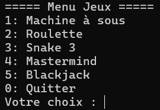

Projet 1 : Multigame

Description détaillée
Ce projet consiste en une application console en C++ qui centralise quatre jeux classiques développés de A à Z. L'application propose un menu principal interactif permettant de choisir et de lancer instantanément le jeu de son choix :
- Machine à sous : Un mini-jeu de casino basé sur le hasard, simulant des rouleaux aléatoires, des multiplicateurs de gains et un système de jetons virtuels.
- Roulette : Une simulation du célèbre jeu de casino où le joueur peut miser sur un numéro plein, une couleur (Rouge/Noir), ou la parité (Pair/Impair) avant le lancer de la bille.
- Snake : Le célèbre jeu du serpent où l'objectif est de grandir en attrapant de la nourriture sans percuter les murs ou sa propre queue.
- Mastermind : Un jeu de réflexion et de logique où le joueur doit décoder une combinaison secrète de couleurs en un nombre de tentatives limité.
- Blackjack : Un jeu de cartes contre la banque avec gestion des mises, du score et des règles de distribution.
Manipulations
Pour lancer l'application console, clonez le dépôt, dézippez le, puis allez dans ce dossier dézippé et avec un clic droit dans le dossier et faites "Ouvrir dans le Terminal".
Par la suite, entrez cette commande : g++ main.cpp blackjack.cpp Machine_a_sous.cpp mastermind.cpp Roulette.cpp Snake_3.cpp -o jeux, cette commande permet de compiler tous les fichiers en un
exécutable nommé "jeux", puis faites ./multigame, le code s'exécute et vous aurez le choix de choisir le jeu, après avoir choisi le jeu que vous voulez, vous pourrez y jouer librement.